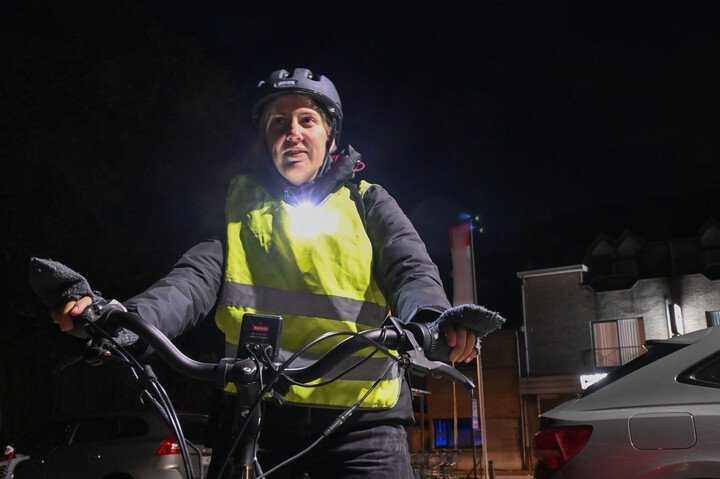

Je fietst in het donker naar huis. Je voorlicht is bevestigd op je jas en je achterlicht op je helm. Is dat toegelaten?

- Ja, dat mag, als het vooraan een wit licht is en achteraan een rood licht.
- Ja, dat mag, maar om in orde te zijn volgens het verkeersreglement moet je ook een voor- en achterlicht op je fiets hebben.
- Nee, dat mag niet.
Wanneer de zichtbaarheid beperkt is, moet je als fietser verplicht een wit of geel voorlicht hebben en een rood achterlicht. Let erop dat je lichten goed zichtbaar en niet verblindend zijn. Of het licht op je fiets is bevestigd of op je kledij, helm of rugzak, maakt niet uit.
Weet je vanop hoeveel meter je achterlicht zichtbaar moet zijn?